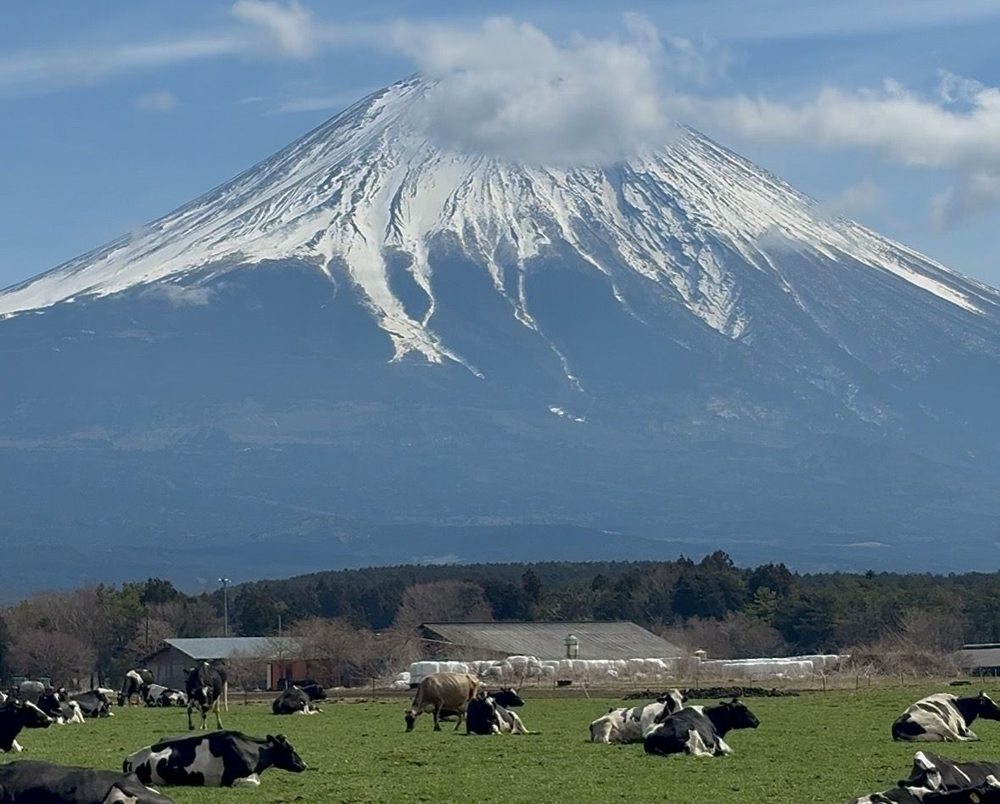
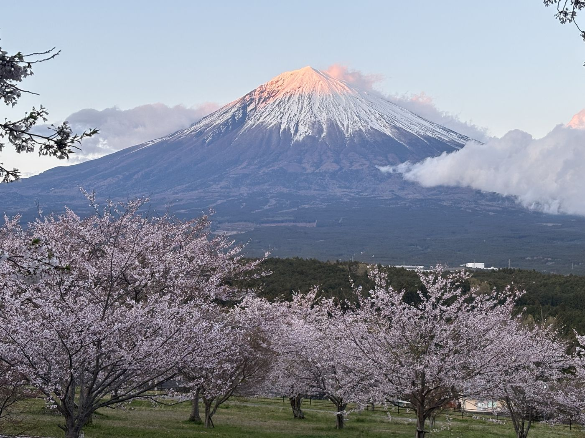

The trick: switch sides
Nearly all international tourism concentrates on Mt. Fuji's northern side — the Kawaguchiko lakes and the famous pagoda shot. The photos are real, and so are the crowds that come with every tour bus from Tokyo.
The southern side — Fujinomiya, at the mountain's foot — is where Fuji worship historically began and where locals actually live with the mountain. It has its own lakes-and-plateau viewpoints, the principal shrine of Fuji worship, and a fraction of the visitors, because the big buses don't come here. It's also the easy side to reach if you're already on the Tokyo–Kyoto Shinkansen: Shin-Fuji Station is right there.

Go where the locals point you
On the southern side the best angle changes with the day — cloud cover, season, snowline. Locals keep a mental list of spots and pick on the morning itself. Ours runs to seven local viewpoints: a bridge that frames the peak, a highland plateau with grazing cows, a lakeside "double Fuji" mirror reflection, a quiet park bench above the city, and yes — a convenience-store shot without the barricades and crowds of the famous one.
That morning-of flexibility is the real luxury. A fixed itinerary drives to a viewpoint and hopes; a local picks the viewpoint that's working today.


When can you actually see Mt. Fuji?
Honest numbers, because the mountain hides more often than brochures admit:
| Season | Chance of seeing Mt. Fuji |
|---|---|
| November – February | Best — roughly 60–73% of days |
| Spring & Fall | Roughly 27–47% of days |
| Summer | Shyest — roughly 13–17% of days |
Two rules of thumb apply year-round: mornings beat afternoons (clouds build over the day), and a clear winter morning is about as close to a guarantee as Fuji ever gives.

And if the mountain hides?
Plan for it rather than gamble. The southern side is dense with indoor and cultural experiences that don't depend on visibility: a special prayer inside Fujisan Hongu Sengen Taisha, the UNESCO World Heritage Center that tells the mountain's story indoors, sake tasting at a 190-year-old brewery, and an award-winning tea house. On our tours this isn't a consolation prize — rainy-day guests regularly leave five-star reviews. The cloudy-day plan is laid out on the tour page.